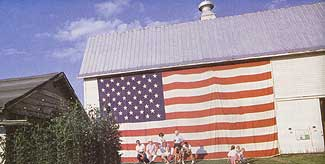
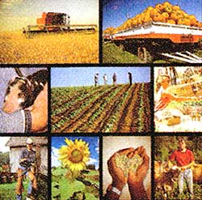

Professor Emeritus
University of Missouri
Unfamiliar questions of security were forced into the minds of Americans by the events of September 11. We immediately focused on questions of physical security. We also questioned our economic security. But now perhaps we should question our food security. How can we ensure we will have enough food to eat if we face decades of global unrest and economic uncertainty?
Ultimately our food is no more secure than our relationships with each other and our relationships with the land.
In an increasingly global society, America seems to be willing to carry out a long and protracted war against countries that support the terrorists who might threaten our physical security, ensuring decades of global turmoil. America also appears to be willing to become increasingly dependent on other countries of the world for our food, even during these times of growing global distrust. In the world trade arena, U.S. negotiators are pushing for removal of all social and ecological barriers to economic "free trade."
Other countries have lower-cost land and labor, and thus have an economic "comparative advantage" in food production. For example, in South America and China agricultural land and farm labor costs are but a small fraction of U.S. land and labor costs. Nonfarm employment opportunities and residential demands for land in the United States will keep upward pressure on costs, eventually pricing American agriculture out of a "free market" global economy.
In addition, American agriculture increasingly is coming under corporate control, through contractual arrangements that move all-important production and marketing decisions from local farmers to executives in some distant corporate headquarters. Many of the agribusiness corporations are multinational-with corporate offices and stockholders in countries all around the world. These corporations have no commitment to any particular community, region or nation. Eventually they will move their agricultural operations to wherever on the globe they can produce at the lowest dollar-and-cent costs. Increasingly that will be somewhere other than in America. Our future food security is at risk.
Thankfully the corporate, industrial model is not the only viable alternative for our future food and farming systems. A new breed of American farmer has emerged in response to growing concerns about the negative ecological and social impacts of large-scale, industrial agriculture. The success of this new type of farming has important implications for America's future food security.
While there are no blueprints for the New American Farmer, some basic characteristics are emerging. First, these farmers see themselves as stewards of the Earth. They are committed to caring for the land and protecting the natural environment. They work with nature rather than try to control or conquer nature. They fit the farm to their land and climate rather than try to bend nature to fit the way they might prefer to farm. Their farming operations tend to be more diversified than are conventional farms-because nature is diverse. Diversity may mean a variety of crop and animal enterprises, crop rotations and cover crops, or managed livestock grazing systems, depending on the type of farm. By managing diversity, these new farmers are able to reduce their dependence on pesticides, fertilizers and other commercial inputs that squeeze farm profits and threaten the environment. Their farms are more economically viable, as well as more ecologically sound, because they farm in harmony with nature.
Second, these new farmers build relationships. They tend to have more direct contact with their customers than do conventional farmers, marketing their products directly to customers or through agents who represent them with their customers. They are not trying to take advantage of their customers to make quick profits; they are trying to create long-term relationships. They market to people who care where their food comes from and how it is produced-locally grown, organic, natural, humanely raised, hormone and antibiotic free, etc.-and they receive premium prices by producing what their customers value.
These new farmers challenge the stereo-type of the farmer as a fiercely independent competitor. They freely share information and encouragement. They form partnerships and cooperatives to buy equipment, to process and market their products, to do together the things that they can't do as well alone. They are not trying to drive each other out of business; they are trying to help each other succeed. They buy locally and market locally. They bring people together in positive, productive relationships that contribute to their economic, ecological and social well-being.
Finally, to these new farmers, fanning is as much a way of life as a way to make a living. To them, the farm is a good place to live: a healthy environment, a good place to raise a family and a good way to be a part of a caring community. Their quality-of-life objectives are at least as important as economic objectives. Their farming operations reflect the things they like to do, the things they believe in and the things they have a passion for, as much as the things that might yield profits. By following their passion they end up doing what they do best. As a result, for many their products are better and their costs are less. Most new farmers are able to earn a decent income, but more importantly, they have a higher quality of life because they are living a life they love.
There are literally thousands of these new farmers, all across the continent, creating new and better ways to farm. They are on the frontier of a new and different kind of agriculture, an agriculture capable of meeting the needs of the present while leaving equal or better opportunities for those of the future-a sustainable agriculture. These farmers face struggles and hardships, and there are failures along the way. Life is rarely easy on any new frontier. But a growing number are finding ways to succeed. (For examples, see box on below.)
Does it matter to the rest of us, whether or not these new farmers succeed? You bet it does-whether we realize it or not. At some time in the future, much of our current commercial agricultural production may be moved to other countries by the multinational corporations. Perhaps we won't allow the multinationals to abandon agriculture in America completely. But Americans could someday become as dependent on the rest of the world for food as we are today for oil. Perhaps we could keep the food imports flowing, as we maintain the inflow of oil today. But how large a military force might it take? What new Organization of Food Exporting Countries might be formed to control the food market? How many small wars could we have to fight to keep a "renegade country" from restricting our supply of food? How many terrorist attacks might we suffer at the hands of people who feel oppressed by corporate American food policies?
The food security of the nation may well rest in the hands of these farmers who are breaking away from the global, industrial food system. During some future global crisis we may well be forced to rely on local farmers for our very survival. If so, we will need more farmers who know how to work with nature to produce more-,without relying on costly commercial inputs. If so, we will need more farmers who have developed direct relationships with their neighbors and their customers, creating value, as well as reduced costs by marketing more directly to local customers.
Can America depend on these new farmers? We can if we make it possible for them to remain true quality-of-life farmers, sustainable farmers, instead of forcing theta to exploit the land, their customers and each other in vain attempts at economic survival. These new farmers are real people. Unlike multinational corporations, they have hearts, they have souls, they have families, communities and nationalities. They are not going to quit farming and move away from their family and friends just because they could make more money elsewhere. They are rooted in the place where they grew up, where they have family. They would like their children to take roots in those places as well. They are Americans. They love this country. They are not going to renounce their citizenship and leave this country just because they could make more profit farming in some other country.
If you think you might like to become a New American Farmer, first get some practical experience and then start small. Small Farm Today magazine is a good source of ideas for beginning farmers who want to learn to farm sustainably. The U.S. Department of Agriculture's Sustainable Agriculture Research and Education program ( www.sare.org ) and the Appropriate Technology Transfer for Rural Areas program ( www.attra.org ) are excellent sources for those with more specific information needs. Of course, the ultimate in individual food security is growing your own food. The more farmers and gardeners we have in America, the more secure our food will be.
What can the rest of us do to help? We can buy more of our food at our local farmer's markets (see www.ams.usda. gov/farmersmarkets ). We can join a community supported agriculture group (see www.csacenter.org ). We can seek out and encourage local farmers who are willing to sell directly to customers. We can encourage local grocers and restaurateurs to buy from local farmers at every possible opportunity and patronize those who do so. And we can encourage our friends, neighbors and professional associates to buy local, as well. We can become involved in local and national political issues that affect local farmers' access to land, markets, capital and appropriate technology. (See www.sustainable agriculture.net. ) But equally important, we can do everything in our power to help people reconnect with each other and reconnect with the land. Ultimately our food is no more secure than our relationships with each other and our relationships with the land.
The New
American Farmer
Profiles of Agricultural Innovation
This collection of in-depth interviews with successful sustainable farmers and ranchers will provide inspiration and confidence to anyone who wants to become a New American Farmer. It can be downloaded for free from www.sare.org./newfarmer or purchased for just $10. Call (802) 656-0484.
John Ikerd earned bachelor's, master's and doctorate degrees in agricultural economics from the University of Missouri. Throughout the '70s and '80s, Ikerd traveled through faculty and extension agent positions in North Carolina, Oklahoma and Georgia, before returning to the University of Missouri under agreement with the U.S. Department of Agriculture to provide leadership in sustainable agriculture and food security.
|
 CORBIS |
 |
|